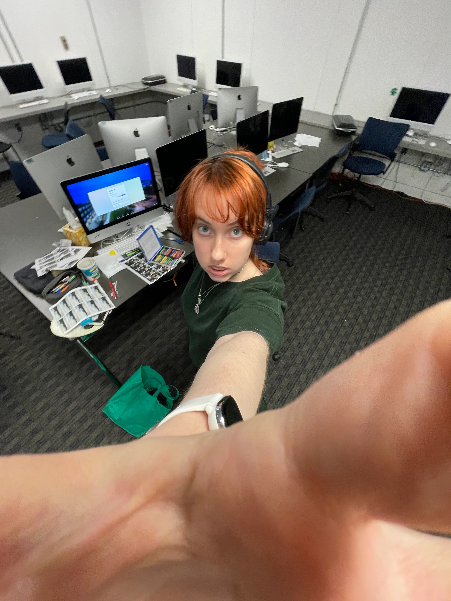
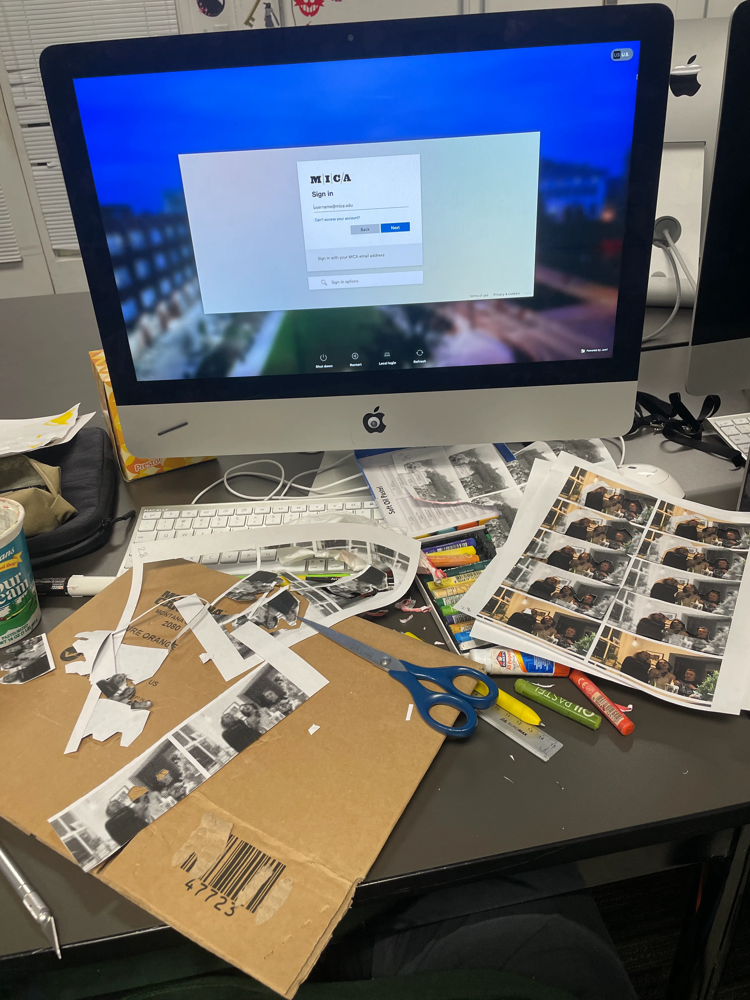
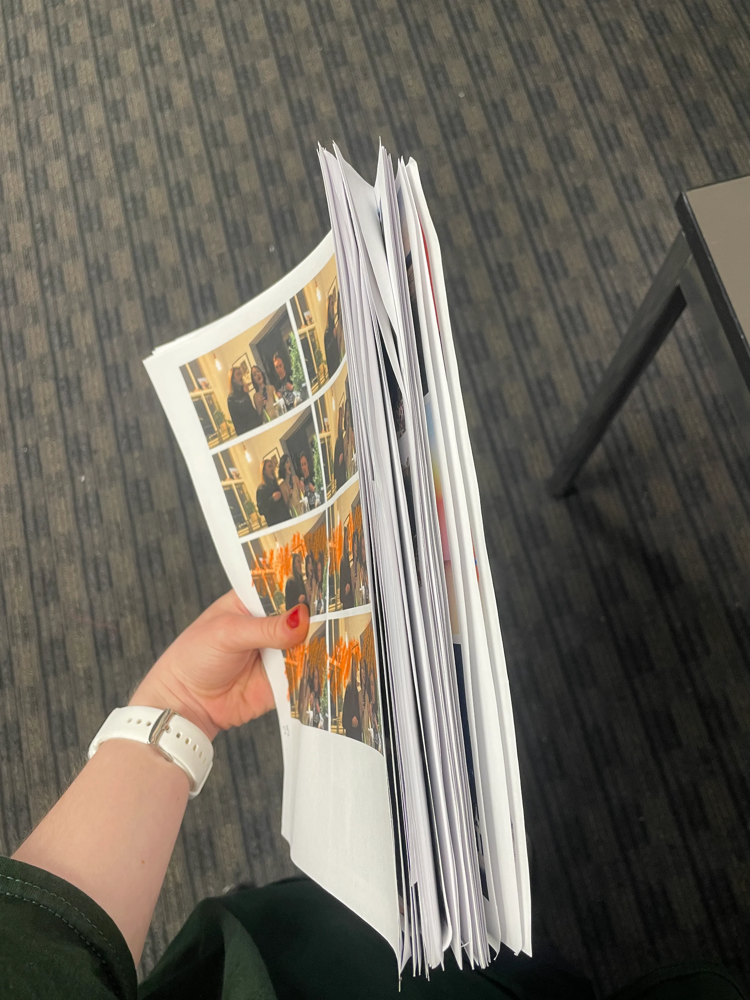
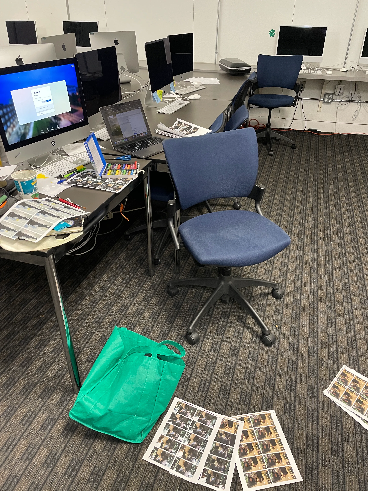

Video Art, Mixed Media Collage
Baltimore MD, 2025
New media class, MICA
This video is based the random fortune cookie I got for this project. It says “Your life will have a series of beautiful moments.”
Based on that I split the video into two parts. The first is my footage from my previous trips to Krakow, Poland and Kyiv, Ukraine. Then the swirl transition in the middle is followed by videos of my friends and wholesome experiences I had during my freshman year.
Both parts show a different kind of beautiful moments.
This is my first time working with mixed media collage. Because I immediately thought of adding moments with my friends and memories dear to me, analog editing seemed the right choice for such heartwarming subject matter. In mixed media animation each frame is undergoes physical manipulations and gets scanned back to acheive this material and texture quality.




This work is meant to evoke feelings of nostalgia, warmth, and gentle sentimentality. The feelings you’d get from looking through an old box of photographs or revisiting videos from a time that has already passed. The physical distortions make the memories feel slightly dreamlike and imperfect, reflecting how memories themselves change over time.
I also meant to leave a trace of the feeling of belonging. Finding comfort in once unfamiliar people and places as they gradually become your new home.